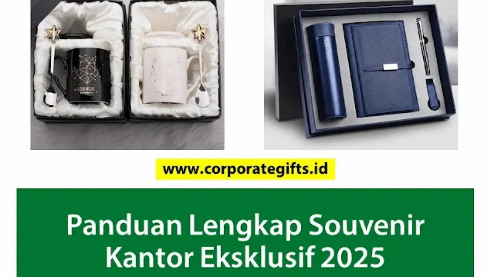

Corporate Gifts ID - Souvenir kantor terbaik adalah hadiah korporat yang memadukan fungsionalitas tinggi, material tahan lama, dan desain elegan seperti tumbler stainless steel, power bank custom, notebook hardcover, tote bag kanvas, dan paket seminar kit, yang efektif menjadi media branding harian bagi karyawan maupun klien.
Di dunia korporat modern, memberikan souvenir kantor bukan lagi sekadar formalitas tahunan. Cinderamata yang tepat adalah instrumen strategis untuk membangun brand equity, mempererat relasi kemitraan B2B, serta mengapresiasi loyalitas tim internal. Memilih item yang benar-benar bermanfaat menjamin investasi cinderamata tidak berakhir sia-sia di laci meja.
Poin Kunci Souvenir Kantor Terbaik:
- Daya Guna Tinggi: Memprioritaskan barang yang terpakai setiap hari untuk memaksimalkan frekuensi paparan merek (brand exposure).
- 5 Kategori Utama: Gadget teknologi, produk eco-friendly, alat tulis eksekutif, custom apparel, dan hampers terkurasi.
- Diferensiasi Audiens: Menyesuaikan spesifikasi produk antara kebutuhan reward staf harian dan bingkisan eksklusif klien VIP.
- Standar Kualitas Vendor: Menilai portofolio fisik, transparansi quotation RAB, serta kepastian timeline produksi massal.
Mengapa Memilih Souvenir Kantor yang Tepat Itu Penting?
Souvenir kantor berfungsi sebagai perpanjangan tangan identitas merek perusahaan di hadapan publik. Berikut tiga alasan strategis mengapa pengadaan cinderamata harus dirancang secara cermat:
- Meningkatkan Brand Awareness Berkelanjutan: Logo dan tagline perusahaan akan terlihat berulang kali saat produk digunakan dalam rapat, perjalanan dinas, maupun aktivitas luar kantor.
- Membangun Loyalitas dan Retensi Hubungan: Hadiah fungsional yang dipikirkan dengan matang menunjukkan apresiasi tulus kepada mitra bisnis dan karyawan.
- Menciptakan Citra Korporat Positif: Material bermutu tinggi mencerminkan profesionalitas dan standar keunggulan institusi Anda.
Tabel Matriks 10 Rekomendasi Souvenir Kantor Berdasarkan Kategori
Berikut rangkuman 10 souvenir kantor terpopuler beserta karakteristik material dan peruntukan acara:
| Kategori | Rekomendasi Produk | Keunggulan Utama | Target Penggunaan |
|---|---|---|---|
| Teknologi | Power Bank Fast Charging | Mobilitas tinggi, kapasitas daya besar | Karyawan mobile, merchandise VIP |
| Teknologi | USB Flashdisk Custom | Transfer data cepat, body metal/kayu | Seminar kit, materi workshop |
| Gaya Hidup | Tumbler Stainless SUS 304 | Tahan panas dingin 8-12 jam, eco-friendly | Welcome kit, hadiah apresiasi |
| Gaya Hidup | Tote Bag Kanvas Premium | Kapasitas muat besar, billboard berjalan | Event pameran, goodie bag kantor |
| Alat Tulis | Agenda Hardcover / Kulit | Tampilan eksekutif dengan deboss logo | Rapat kerja, kickoff meeting |
| Alat Tulis | Pulpen Metal Grafir Laser | Mewah, elegan, personalisasi nama | Cinderamata penandatanganan MoU |
| Apparel | Kaos Polo Katun Pique | Nyaman, rapi dengan bordir presisi | Seragam gathering, outing tim |
| Apparel | Topi Baseball Bordir | Proteksi outdoor, kasual dan modern | Aktivitas lapangan, CSR event |
| Gift Set | Paket Seminar Kit Lengkap | Koleksi terkurasi dalam kemasan serasi | Konferensi, simposium industri |
| Gift Set | Hampers Kopi & Teh Artisan | Menunjukkan selera dan apresiasi tinggi | Kado akhir tahun, hadiah relasi VIP |

Kombinasi paket souvenir kantor eksklusif: instrumen kerja harian yang menyatukan estetika dan fungsi branding.
5 Kategori Populer dan 10 Rekomendasi Souvenir Kantor Terbaik
Berikut ulasan komprehensif 10 item cinderamata kantor yang telah teruji efektivitasnya dalam menunjang produktivitas dan promosi korporat:
1. Kategori Fungsional dan Teknologi
Merchandise teknologi memiliki tingkat retensi pakai tertinggi karena sangat relevan dengan dinamika kerja era digital.
- Power Bank Custom: Penyelamat mobilitas profesional modern. Model bodi ramping dengan kapasitas 10.000 mAh dan cetakan UV logo korporat memberikan nilai fungsional maksimal.
- USB Flashdisk Custom: Media transfer data fisik yang andal untuk dokumen kerja penting. Tersedia dalam varian balutan kayu atau logam elegan.
2. Kategori Gaya Hidup dan Ramah Lingkungan
Mencerminkan komitmen institusi terhadap program keberlanjutan lingkungan dan kesehatan kerja.
- Tumbler Stainless Steel SUS 304: Primadona cinderamata kantor berkat insulasi vakum ganda yang menjaga suhu minuman dingin maupun panas hingga 12 jam. Cek opsi model di katalog souvenir kantor kami.
- Tote Bag Kanvas: Tas jinjing serbaguna berbahan katun kanvas tebal yang menjadi papan iklan berjalan saat dikenakan beraktivitas harian.
3. Kategori Alat Tulis Premium
Pilihan klasik yang memancarkan wibawa profesionalitas tinggi untuk meja kerja pimpinan dan mitra bisnis.
- Agenda atau Notebook Hardcover: Sampul kulit sintetis dengan finishing deboss logo menghadirkan kesan rapi untuk mencatat hasil pertemuan strategis.
- Pulpen Metal Eksklusif: Pena berbahan logam dengan ukiran grafir laser nama personal atau logo instansi, memberikan sentuhan prestisius saat penandatanganan dokumen kerja.
4. Kategori Pakaian (Apparel)
Sangat efektif untuk memperkuat kekompakan tim kerja internal dan identitas visual saat perhelatan acara bersama.
- Kaos Polo (Polo Shirt): Memadukan kenyamanan bahan katun pique dengan kerapian bordir logo perusahaan untuk seragam kerja kasual.
- Topi Custom: Pilihan merchandise pelengkap untuk aktivitas luar ruangan, gathering keluarga karyawan, maupun kegiatan CSR.
5. Kategori Gift Set dan Hampers
Dirancang khusus untuk menghadirkan kesan mendalam pada momen-momen seremonial penting institusi.
- Paket Seminar Kit: Kombinasi terintegrasi antara tas, buku catatan, pulpen, dan name tag yang dikemas rapi untuk peserta konferensi. Telusuri ragam paket di direktori paket seminar kit kami.
- Hampers Kopi atau Teh Artisan: Paket seduhan kopi nusantara atau daun teh spesial dalam hardbox eksklusif yang mencerminkan rasa hormat dan selera tinggi.
Cara Memilih Vendor Souvenir Kantor yang Tepat
Menemukan mitra produksi yang andal adalah kunci kelancaran pengadaan cinderamata korporat. Perhatikan empat kriteria evaluasi berikut:
- Portofolio dan Mutu Material: Teliti rekam jejak proyek sebelumnya dan pastikan mutu bahan baku serta hasil cetak presisi sesuai standar brand Anda.
- Layanan Konsultasi Solutif: Vendor profesional siap memberikan rekomendasi kurasi produk terbaik yang selaras dengan pagu anggaran dan tujuan promosi.
- Transparansi Penawaran (Quotation RAB): Pastikan struktur biaya diuraikan secara rinci tanpa ada biaya tersembunyi (hidden cost).
- Kepastian Timeline Produksi & Legalitas: Pastikan vendor memiliki kapasitas workshop memadai serta kelengkapan faktur pajak resmi untuk pelaporan LPJ pengadaan.
Kesimpulan dan Konsultasi Pengadaan
Memilih souvenir kantor terbaik adalah tentang menemukan titik temu yang harmonis antara fungsionalitas harian, estetika visual, dan representasi nilai brand. Sepuluh rekomendasi di atas memberikan fondasi kuat untuk merancang program corporate gifting yang sukses.
Wujudkan pengadaan souvenir kantor terbaik perusahaan Anda bersama CorporateGifts.ID. Jelajahi katalog produk resmi kami atau ajukan permintaan penawaran harga resmi untuk mendapatkan konsultasi dan preview mockup gratis dari tim kami.